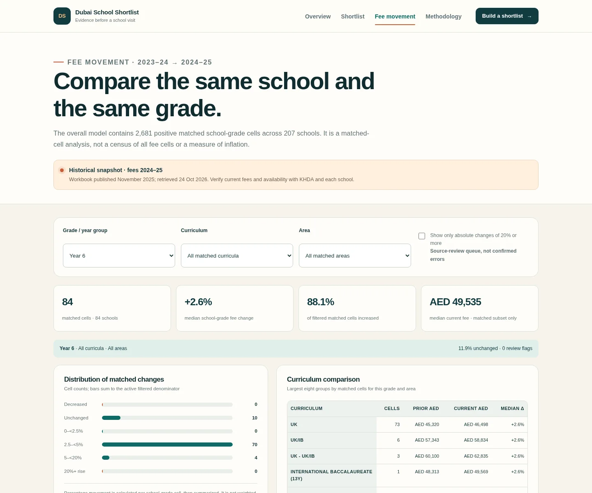
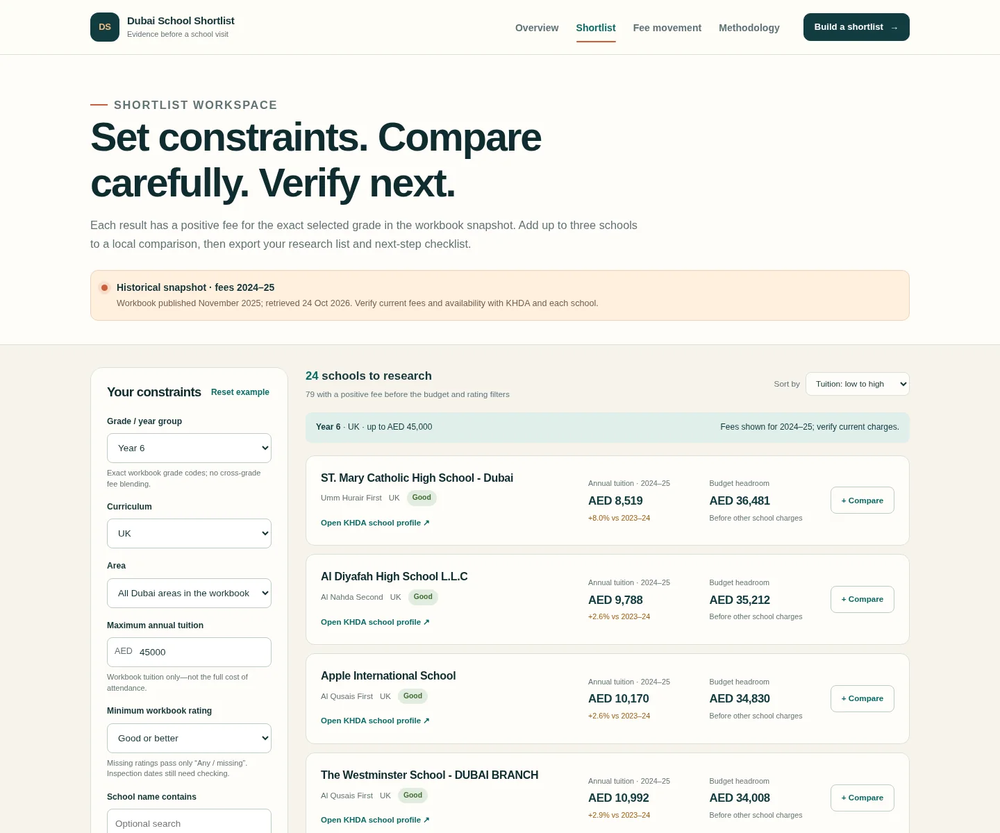

A school research workflow built on a clearly dated KHDA snapshot: filter exact grade, curriculum, area, rating and tuition budget, compare three schools, then export a checklist for everything the workbook cannot verify.
DuckDB SQLPower BINext.jsTypeScriptKHDA open dataPlaywright
Historical snapshot · fees 2024–25Workbook labelled November 2025 and retrieved 24 October 2026. This is not current-2026 fee, admissions, total-cost or school-quality advice.
2,681matched school-grade cells across 207 schools
2.6%median like-for-like fee movement
23SQL checks · 18 PASS / 5 WARN / 0 FAIL
19automated tests passed locally · 12 data + 7 browser
User and decision
A shortlist you can explain.
The primary user is a parent or guardian deciding which schools to verify next—not an algorithm deciding which school is “best”.
Problem
Hundreds of school-grade fee cells, sheet-name differences and missing values make a generic directory hard to use responsibly.
Workflow
Set constraints → compare positive exact-grade fees → save three locally → export CSV/checklist → verify with KHDA and the school.
My role
Source assessment, extraction, SQL modelling and validation, analysis, Power BI specification, web app, tests and documentation.
Delivered outcome
Validated pipeline, working static web app, Power BI build pack and deployment/portfolio patches. No user impact or adoption is claimed.
End-to-end architecture
One reviewed model. Two analytical surfaces.
SQL owns semantics and quality. Power BI and the static web app consume the same curated outputs.
01KHDA workbookOfficial source, retrieval timestamp and SHA-256
02Python extractRaw cells and privacy-minimised provenance
03DuckDB SQLGrain, aliases, facts, marts and 23 checks
04Power BI packRelationships, 37 DAX measures and reconciliation
Actual tested build: the worked example returns 24 UK Year 6 schools with Good-or-better workbook rating and tuition up to AED 45,000.
Validated findings
Every percentage has a denominator.
Results describe the acquired workbook, not the whole market or current fees. Matched percentages are unweighted by enrolment.
Measure
Result
Boundary
Latest school profiles
226
223 have at least one non-empty current fee cell
Positive 2024–25 fee cells
2,853
35 source-zero cells remain excluded from tuition
Matched cells / schools
2,681 / 207
Positive both years, resolved identity and exact grade
Median matched change
2.6%
Not inflation or an enrolment-weighted index
Increased / unchanged / decreased
87.73% / 11.79% / 0.48%
Shares of matched cells
Worked-example median
AED 19,063.50
24 schools; range AED 8,519–44,332
Source-review flags
9
Absolute change ≥20%; not confirmed errors
Data-quality decisions
Coverage is never recovered by guessing.
Explicit identity
Exact normalized names first, then documented same-year aliases. No fuzzy matching or cross-year row-number identifiers. Historical identical-alias usage is separately validated.
Missing means missing
Source zero, a dash and a blank have different meanings. Missing ratings remain missing, and a previous fee is never inferred to create a 0% change.
Warnings stay visible
Blocking failures stop exports. Source zeros, non-numeric cells, coordinate issues, missing ratings and large changes remain in the quality register.

Matched movement explorer: filters recalculate the denominator and distribution in the browser from curated SQL output.
Product workflow
Export the next questions, not false certainty.
Local three-school comparison persists in the browser without an account or family profile.
Safe CSV export includes source years and formula escaping, with no principal/contact fields.
Verification checklist covers current fees, optional charges, admissions, transport, inspection dates and learning fit.

Exact-grade shortlist with positive-fee coverage, workbook rating and official KHDA navigation links.
Honest completion boundary
What is—and is not—claimed.
Completed: validated SQL pipeline, curated exports, Power BI model/DAX/page/reconciliation pack, locally and production-browser-tested static app, owner Vercel deployment, CI/source-check workflow files and this portfolio patch.
Not claimed: a PBIX authored in Power BI Desktop, Power BI Service refresh, hosted GitHub Actions runs, measured family impact, live admissions data, or current 2026 fees. Power BI Publish to web is public and is enabled only after explicit review.